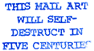

|
|
Soon
the postman began to give me strange looks, the envelopes from mailartists
sometimes rival their contents and are frequently decorated with drawn,
printed, painted or collaged designs. Networkers are required to find room
for postage stamps, but in addition many make their own artistamps, expressing
their own concerns. Rubberstamps too are a favourite mail art medium - traditionally the cheapest printing technique for franking, cancelling or endorsing, and more at home in the office than the artists' studio. Similarly, many mailartists produce copyart exploring the art potential of another piece of office equipment, the photocopier. Mail art often functions like pen-friendship, it is a precursor to the internet and email. At its simplest, mail art is the exchange of artworks, often with letters, and the passing on of information through the network. In addition, mail art projects are set up by artists seeking collaboration and who wish to explore a particular theme. A typical mail art project begins with sending out 'calls' or invitations to contribute artwork towards a show or publication. Any size restrictions or other limitations are stated in the invitation along with a deadline date. Whilst mainstream galleries charge entry fees and involve a selection process, there are no fees and no jury where mail art is concerned. Although works are not returned, contributors receive an address list, catalogue or other documentation of the project in return. |
||||||||||||||||||||||||||||||||
| |
|||||||||||||||||||||||||||||||||
|  | |||||||||||||||||||||||||||||||||